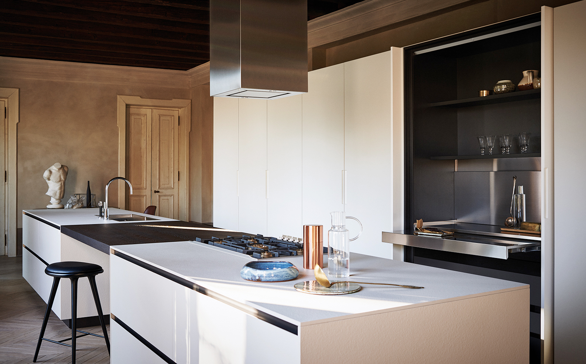
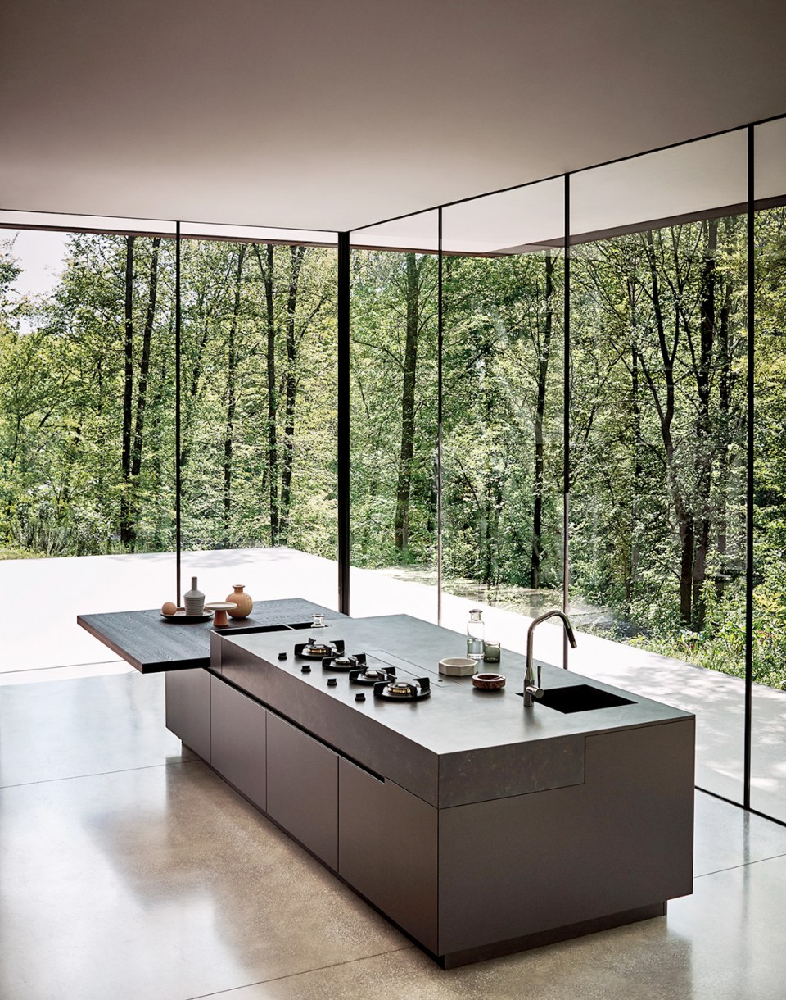
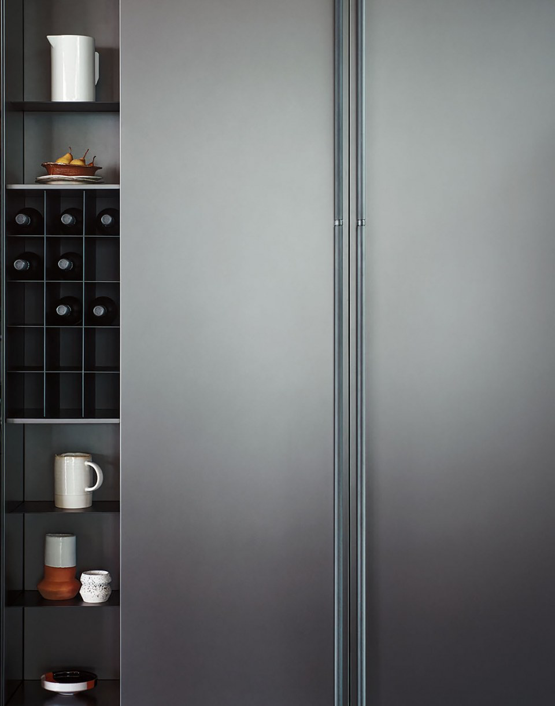

Maxima 2.2
Design by R&D Cesar
Maxima 2.2 — универсальная архитектурная система Cesar, отличающаяся широкими возможностями для самовыражения. Более 160 финишей в сочетании с различными способами открывания делают её гибким проектным инструментом, сохраняющим чёткость линий и внимание к материалам в любой компоновке.
Система органично сочетается с другими коллекциями, переходя из кухни в жилую зону без потери единства стиля. Модульность и технологичность здесь не противоречат эстетике — они её усиливают.
Широкий выбор материалов, цветов и систем открывания позволяет создать пространство, которое точно отражает характер и образ жизни своего владельца.


Жизнь — это перемены. Каждый день я сталкиваюсь с выборами и событиями, которые помогают понять, кто я есть. Развиваясь, я остаюсь верна своему представлению о себе — мечте, в которой я была счастлива, умела ценить красоту во всех её проявлениях и прославлять её чистоту. Maxima 2.2 создана командой дизайнеров R&D Cesar — внутренним бюро фабрики, которое объединяет производственную точность и архитектурное мышление. Пространство, материал и технология работают как единая система — строгая, но способная адаптироваться к любому интерьеру, сохраняя баланс между функцией и красотой.
Modularity
Maxima 2.2 строится как архитектурная система, в которой каждый элемент точен и осмыслен.
Богатство материалов и чёткость форм сохраняются в любом масштабе — от компактной городской квартиры до просторного дома с открытой планировкой.
